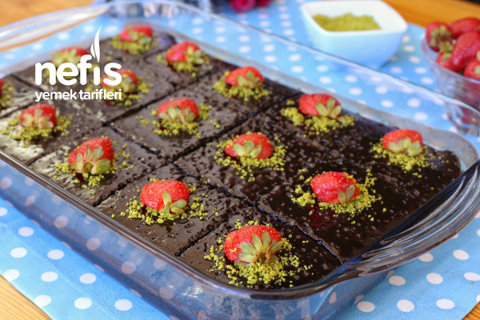

Malzemeler:
- 1 su bardağı toz şeker
- 3 adet yumurta
- 1 su bardağı sıvı yağ
- 1 paket vanilya
- 1 su bardağı süt
- 4 yemek kaşığı kakao (dark)
- 1 paket kabartma tozu
- 1,5 su bardağı un
- Sosu için;
- 3 yemek kaşığı kakao (dark)
- 1 çay kaşığından biraz az tuz
- Yarım su bardağı sıvı yağ
- 1 su bardağı toz şeker
- 1 su bardağı süt
- Süslemek için;
- Antep Fıstığı
- Çilek
Hazırlanışı:
- Karıştırma kabına üç adet yumurta ve bir su bardağı toz şekeri alarak 3-4 dakika köpük köpük oluncaya kadar çırpalım. Unutmayın ne kadar çok çırparsanız kekinizde yumurta kokusu olmadan yumuşacık pişecektir. Ayrıca yumurtalarınızın oda sıcaklığın da olmasına dikkat edin.
- Üzerine bir su bardağı sıvı yağ, bir su bardağı süt ve bir paket vanilya ilave edip tekrar çırpalım.
- Ardından dört yemek kaşığı dark kakao, elenmiş bir paket kabartma tozu ve elenmiş 1,5 su bardağı unu ekleyerek malzemeler karışıncaya kadar birkaç dakika daha çırpalım. Dark kakaoyu tüm marketlerdeki pasta malzemelerinin satıldığı reyonda kolaylıkla bulabilirsiniz. Ayrıca kekinizin güzel Kabarması için kuru malzemeleri ekledikten sonra çok fazla çırpmamaya özen gösterin.
- Güzelce karıştırdığımız kek hamurumuzu sıvı yağ ile yağladığımız 24 x 35 cm boyutundaki dikdörtgen borcama boşaltalım.
- Önceden ısıttığımız 180° fırında kontrollü bir şekilde yaklaşık 35 dakika pişirelim.
- Pişen kekimizi soğumaya bırakalım.
- Biz de bu arada sosu için tencereye üç yemek kaşığı dark kakao, bir çay kaşığından biraz az tuz, yarım su bardağı sıvı yağ, bir su bardağı toz şeker ve bir su bardağı sütü alalım. Malzemelerimizi pürüzsüz kıvam alıncaya kadar tel çırpıcı ile karıştıralım. Tenceremizi ocağa alalım ve orta ateşte karıştırarak kaynamaya bırakalım.
- Fokurdamaya başladıktan sonra 3-4 dakika daha kaynatıp ocağı kapatalım ve sosumuzu ılımayı bırakalım.
- Daha sonra sosumuzu daha iyi çekmesi için kekimizi dilediğimiz büyüklükte dilimleyelim.
- Ardından ılıyan sosumuzu kekin her yerine gelecek şekilde gezdirelim.
- Sosunu çekmesi için kekimizi en az 2 saat dinlendirelim.
- Daha sonra kekimizi dilediğimiz şekilde süsleyerek servis edelim. Ben antepfıstığı ve çilek kullandım, siz dilediğiniz farklı malzemelerde de süsleyebilirsiniz.
